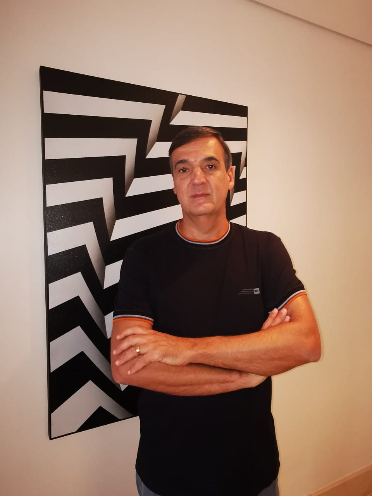

Ictus - O prisioneiro sem nome
- Ficha técnica
- Livro: Ictus - O prisioneiro sem nome
- Autor: Marcelo Marçal
- Editora: Labrador; 1ª edição (5 julho 2021)
- ISBN/ASIN: 978-6556251509
- Páginas: 256
- Preço sugerido: R$ 26,00
- onde encontrar
Descrição
No auge da mais assustadora pandemia dos últimos cem anos e com os olhos voltados para a tragédia que passou a controlar a vida de todas as pessoas, o autor - médico por profissão e, assim, testemunha ocular dos fatos - idealizou e escreveu este livro cujo enredo transcende a fase atual de adaptação da sociedade e se passa alguns anos adiante. Com isso, apresenta não somente a evolução a narrativa, mas principalmente a busca pela essência humana que se encontra recôndita em todos nós e que se manifesta durante grandes crises, com o objetivo de relembrar os valores do que é certo e o verdadeiro. A adaptação a um novo mundo e a novos caminhos, muitas vezes desconhecidos e intimidadores, nos leva a um período e observação e análise das nossas próprias vidas para que, assim, possamos assimilar novos conceitos e valores, intrínsecos e extrínsecos, e aplicá-los à nossa nova realidade. É exatamente isso que acontece com o protagonista desta história, que vive essa transição de forma inusitada e surpreendente. O que o futuro pós-pandemia nos reserva é um mistério, mas certamente será algo diferente do que vivenciamos no passado. Independentemente do que no trará, o mais certo é que devemos ser gratos a ele e que nos compete, desde já e pouco a pouco, honrar a grandeza de tudo que está por vir.
O Autor
Marcelo Marçal nasceu em Santo André, São Paulo, onde vive com sua esposa e seus dois filhos. Formou-se em Medicina pela Universidade Federal do Rio de Janeiro e, mais tarde, especializou-se em Nefrologia. Fundou uma empresa de diálise hospitalar em São Paulo, onde atuou por 21 anos – inicialmente como médico nefrologista e, em sequência, como gestor –, até sua venda, em 2019. Foi quando começou a dedicar-se a escrever seu primeiro romance, ICTUS – O prisioneiro sem nome.